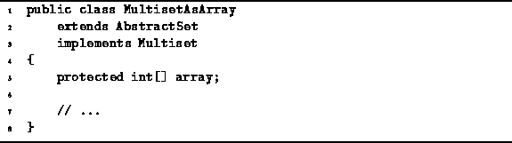

Data Structures and Algorithms
with Object-Oriented Design Patterns in Java
Data Structures and Algorithms
with Object-Oriented Design Patterns in JavaA regular set may contain either zero or one instance of a particular item. As shown in the preceding section if the number of possible items is not excessive, we may use an array of boolean variables to keep track of the number of instances of a particular item in a regular set. The natural extension of this idea for a multiset is to keep a separate count of the number of instances of each item in the multiset.
Program  introduces the MultisetAsArray class.
The MultisetAsArray class extends the AbstractSet class
defined in Program
and it implements the Multiset interface
defined in Program .
The multiset is implemented using
an array of
introduces the MultisetAsArray class.
The MultisetAsArray class extends the AbstractSet class
defined in Program
and it implements the Multiset interface
defined in Program .
The multiset is implemented using
an array of  counters.
Each counter is an int in this case.
counters.
Each counter is an int in this case.

Program: MultisetAsArray class.
 Copyright © 1998 by Bruno R. Preiss, P.Eng. All rights reserved.
Copyright © 1998 by Bruno R. Preiss, P.Eng. All rights reserved.